Chapter 11 Connect
👉 Configure the Vibe system’s Connection, manage input and output protocols, setup the connected external devices.
This chapter deals with configuring DMX over Ethernet and other frequently used protocols such as RDM, OSC and CITP.
Chapter index:
- 11.1 DMX
- 11.2 RDM
- 11.3 Network
- 11.4 Wings and Nodes
- 11.5 MultiUser
- 11.6 MIDI
- 11.7 TimeCode
- 11.8 OSC
- 11.9 CITP
- 11.10 PSN
- 11.11 NDI
11.1 DMX
Vibe supports transmission of 256 universes on DMX over Ethernet using the industry standards of Art-Net versions 1 ⟶ 3, ad sACN (ANSI E1.31-2016 standard). and the Compulite VCs protocol.
For DMX output management, physical or over network protocols, please refer to the Patch Chapter.
11.2 RDM
RDM is fully supported on the 8 physical DMX output ports and Compulite VC protocol.
Vibe uses the External Devices view, RDM Devices tab, to scan the network for RDM compatible devices, get their information and perform settings updates on the target devices.
View RDM information:
Open the External Devices View.
Tap the RDM Devices tab.
Tap {Get Devices} on the view’s menu - The system will scan and display RDM compliant devices.
If new devices are added, press {Re Scan}.
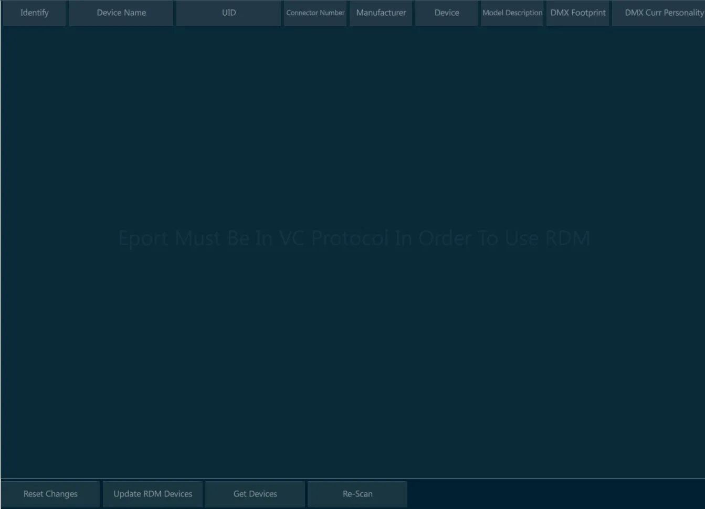
👉 RDM protocol on a DMX wiring works only when every device on the line is RDM compliant. This includes any fixture, any splitter and any DMX node that may be wired in between the line.
11.3 Network
Vibe has different user accessible Ethernet networks:
- Data Network - Accessible via the two EtherCON connectors on the rear panel.
◾ Used for Art-Net, sACN, Compulite VC protocol nodes and Master/Slave backup.
- General Networks - Accessible via the two RJ45 connectors on the rear panel.
◾ Used for Network storage of show files and remote diagnostics.
Each network device must have its own unique static IP address in the form of four triplets xxx.xxx.xxx.xxx, to identify it on the network. In Vibe, this can be set in the Network Settings popup.
It is not necessary to have three digits in each segment of the IP but there must be at least one digit in each segment. Vibe ships with a default Subnet Mask of 255.0.0.0 which means that it is only important that the first triplets of the IP (the start address) must match on all devices in the network. Devices on the same network must not have identical IP addresses.
Common Start IP addresses:
2.x.x.x - Default for Art-Net networks.
10.x.x.x - Default for most ETC networks and alternate for Art-Net network.
192.x.x.x -Default for most MA consoles.
Subnet Mask - Identifies the network itself and in conjunction with the IP address can be used to properly route network devices.
255.0.0.0. - Compulite Default. Only the first triplet must match.
255.255.0.0 - Common in configurations with different systems on the same network. The first and second triplets must match.
255.255.255.0 - Common in configurations with many different systems on the same network. The first, second and third triplets must match. Not suggested for networks having more Compulite consoles connected.
Compulite uses the third triplet as a console identifier in some of the products.
The Vibe can be used in networks using a DHCP server but cannot act as a DHCP server.
Switches:
Vibe has two internal switches, single direct device to device connections are possible without a cross cable.
When more than one device is connected to the Vibe a good quality gigabit switch should be used.
Many systems have gone down due to bad Ethernet cabling and cheap switches. It is recommended that EtherCON connectors are used where possible in conjunction with professional grade switches designed for lighting and audio applications..
11.3.1 Network Settings
Vibe Consoles have 4 different networks:
the Main Network is referred to the Data ports, that are in parallel under the same network board.
the General Networks are referred to the General_1 and General_2 ports, that are independently addressable.
the Internal Network has no external ports, it is used for internal connection between the Vibe components. The User should avoid editing this network’s settings as it may compromise the console functioning.
Vibe PC has only one network configuration tab:
- the Main Network, referred to the system’s network port used as Data output.
Open the {NETWORK SETTINGS} from Vibe Menu > Settings or tap the Network Settings button - The Network popup will open.
11.3.2 Main Network
The Main Network Tab shows the configuration of the network used for data transmission.

Local:
Option to set the local information of the console such as IP and name.
Unlock the boxes to edit the fields.
Console State:
There are 2 possible individual states:
Stand Alone (Default) – Console is not in a session but networking for outputs, remotes and external connections are active.
Local (Offline) – Same as Stand Alone but disables the DMX over Ethernet.
User ID:
- Not implemented yet..
Start Session:
- The console becomes a Master, meaning it’s hosting a session where Backup consoles can be connected.
Online IP Devices:
- Displays all Valid IP based devices active on the network.
Delete Selected:
- Remove the selected devices from the list.
Clear IP Devices:
- Clear the whole IP device list.
Connect As … / Disconnect:
- Related to starting or ending a session with a master console.
11.3.3 User Networks
On the Vibe consoles, the User Networks Tab shows the configuration of the networks used for additional operations.

General Network IP addresses, both regarding General Network 1 and General Network 2, can be configured in the User Networks tab:
select the Network Adapter,
fill the IP Address and DNS fields as desired,
apply the network settings with the dedicated key.
General Networks may be used for specific operations that require special network configurations, that may be very different, or even incompatible, with the Data network settings.
Some examples of General Network purposes are:
connection to remote external servers for files backup and management,
connection to web services such as TeamViewer to get remote support,
communication with third party devices to exchange OSC commands.
👉 General Networks are not intended to be used for Data output or to establish multiuser connection between Vibe systems and accessories. Please use the Main Network for these common lighting control operations.
11.4 Wings and Nodes
Compulite manufactures some additional devices that can be connected to the Vibe system and configured directly via the Vibe software.
These devices include:
Compulite Vibe Wings
Compulite Vector Wings
Compulite ePort Nodes.
The External Devices View shows all the ePort nodes and the Wings connected to the network, permitting remote management and configuration of the settings.
Vibe actively scans the network to find other compatible Compulite devices. Once recognized by the Vibe system, all the devices found in the network are automatically listed in the view’s tabs.
By selecting a Compulite device, its current options will appear in the External Devices view, according to the amount of ports available (ePorts) or controllers types on the panel (Wings).
The Vibe may be used to configure and update Compulite Device’s settings as well as to perform firmware updates.
This view also permits to manage other brands devices that are compliant with the RDM protocol.
11.4.1 Vibe Wings
Any Vibe Wing, as well as most of the Vector Wings, can be connected and configured directly from Vibe, through the External Devices view.
Supported Vibe and Vector Wings that are automatically found by the Vibe while scanning the network are listed in the Wings tab of the External Devices view.
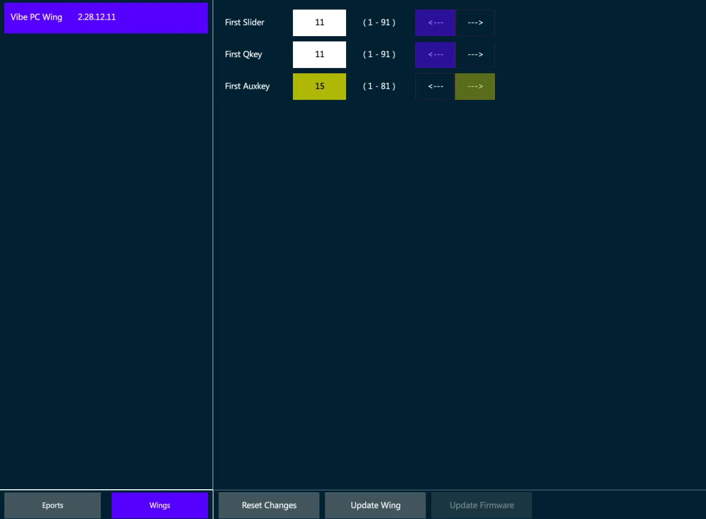
The Wings tab inside the External Devices view allows to rename the wings and to enable or disable parts of the panel, such as the Grand Master, the Editor, the Controllers.
Unavailable parts, such as the Editor on a Playback Wing, will be grayed out.
Vibe Wings have the same controller types of the console, including Sliders, Qkeys and Auxkeys.
The Wings’ Controllers may be configured from the External Devices view by assigning the starting number for each controller type, as well as ordering the numbering direction from right to left or from left to right.
👉 When a Wing is used with a VibePC, it may be good to have its controllers starting from 1, but when it is used as an expansion, its controllers may be starting from 11 or from 16 (depending on the console model) to obtain additional physical controllers that are not on the console panel.
The Wing’s IP address is not assignable, as it is automatically set by the console once the wing is connected and linked, with a logic that adds +10 to the last number of the console’s IP or of the last Wing connected to the system.
External Wings that are compatible with the Vibe software, such as Vibe PC Wing and Vector PC Wing, will keep the settings configured in the External Devices view once they are reconnected to the system, unless they have been connected to other Compulite systems in between.
Configure the Wing
Make sure that the Vibe IP and the Wing IP are in the same range.
Write a text in the Name field to rename the Wing.
Write the First Slider, Qkey and Auxkey number in the relative field.
Set the Controllers’ numbering direction.
Set the panel part to be Enabled or Disabled (if available).
Tap {Update Wing} to apply the changes or {Reset Changes} to discard.
Update Firmware
Before updating the device’s Firmware, make sure the update file is the correct one for the Wing’s version. Compulite support may be contacted to check that.
Select the Wing from the list.
Tap {Update Firmware}. The file popup will open.
Select the update file from the USB stick and press Apply.
11.4.2 ePort Nodes
Compulite manufactures the ePort serie of DMX over Ethernet nodes.
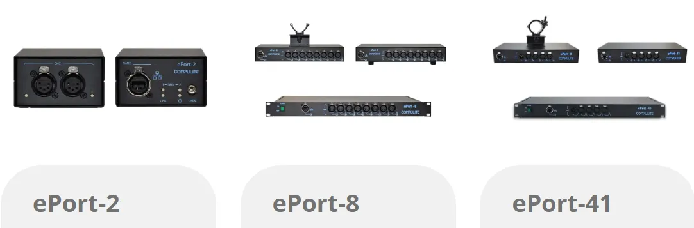
Any ePort can be connected and configured directly from Vibe, through the External Devices view.
Supported Vibe and Vector Wings that are automatically found by the Vibe while scanning the network are listed in the Wings tab of the External Devices view.

Configure the ePort
Make sure that the Vibe IP and the ePort IP are in the same range.
Write a text in the Name field to rename the ePort.
Select the DMX-ON-Ethernet protocol in the protocol list.
Tap {Update Eport} to apply all the changes.
Patch Universes to the Ports
Tap on the Universe cells in the Port’s table to enter the edit mode.
Assign a numeric value and press Enter (or tap outside the cell).
The Edited cells get a yellow background.
Tap on the direction cells to switch the port from Output to Input.
Tap on the RDM cells to switch the RDM protocol On / Off.
Tap {Update Eport} to apply the changes or {Reset Changes} to discard.
Update Firmware
Before updating the device’s Firmware, make sure the update file is the correct one for the ePort’s version. Compulite support may be contacted to check that.
Select the ePort from the list.
Tap {Update ePort Firmware}. The file popup will open.
Select the update file from the USB stick and press Apply.
C-Net Manager software
Compulite ePort nodes may also be configured through the dedicated C-Net Manager software, downloadable from the Compulite website www.compulite.com
C-net Manager, same as the Vibe software, automatically scans the network and lists down all the ePort nodes that are found connected, allowing the configuration of the communication protocol and ports according to the ePort type.
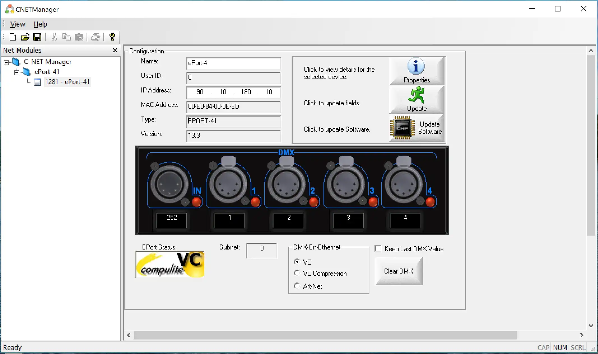
C-net Manager may also be used to remotely ensure whether the ePort’s outputs are active or inactive, by checking the Green or Red status of each Port’s LED.
Supported Protocols
ePort-2
◾ Compulite VC
◾ sACN
◾ Art-Net 3
ePort 41 (Prior to Sept 2016)
◾ Compulite VC
◾ Art-Net v2
ePort-41 (Current)
◾ Compulite VC
◾ sACN
◾ Art-Net 3
ePort-8
◾ Compulite VC
◾ sACN
◾ Art-Net 3
For more product information, see ePort Documents on www.compulite.com
11.5 MultiUser
MultiUser features are about connecting more consoles to the same network and configuring the user rights per each console and programmer connected.
👉 Connect to a Vibe session to program and control the show with more consoles and operators working together in real time.
11.5.1 Master/Backup
Master/Backup is the basic way to connect two Vibe systems and make them work simultaneously on the same show file.
In order to establish a Master/Backup connection, the two Vibe consoles must be in the same network and must run the same Vibe software version.
👉 Any Vibe console can work in a MultiUser Session, while the VibePC needs to install a Network Licence to enable the networking. Not implemented yet..
Connection Process
On the Vibe console that has to become the Master, open the Network Settings to start the Session.
Verify the Network Adapter and IP address used, refresh them if changes are applied.
Tap on the Start Session key. The Console State changes from Stand Alone to Master.
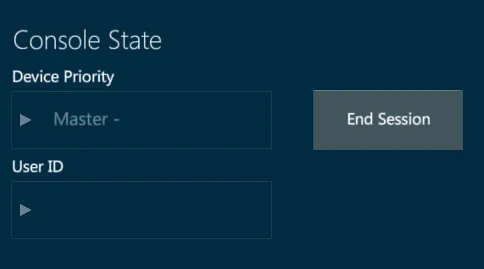
On the Backup console select the Master console from the Online IP Devices box.
Tap on the Connect as Backup key.
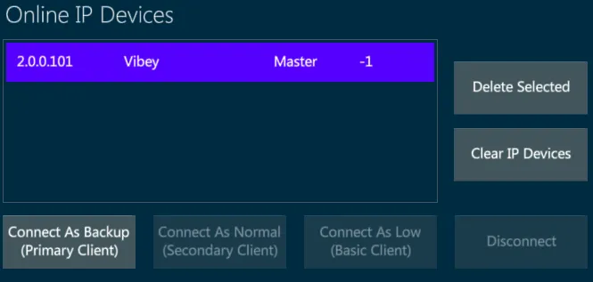
- The Backup console gets a Connect Request popup.
- Tap Approve and wait for the Show Sync Progress bar to finish on both consoles.
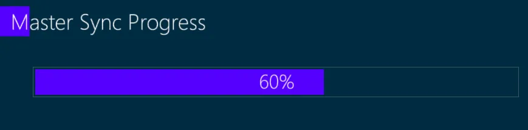
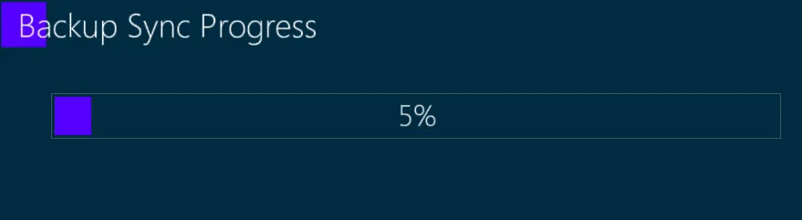
- The Backup console gets a Layout Sync Request popup.
Tap Apply to synch the layout too, or Cancel to keep the layouts separate.
A popup on both systems informs when the connection is ready.
- In the Status Box, a green line shows that the connection is established, and the consoles’ command lines show if the console is the Master or the Backup.
When the Master/Backup connection is ready, both the Vibe systems run the same show and use the same outputs, the ones of the Master.
Any operation that is done either on the Master or on the Backup is synchronized in real time on the other system.
👉 Master and Backup consoles share also the Editor, so the programming operations should be done on one system at a time otherwise they will be merged.
Disconnection Process
To manually end the whole network session, on the Master’s network settings tap on End Session key.
To manually end the synchronized connection:
Open the Network settings on either the Master or the Backup console.
Tap on the Disconnect key.
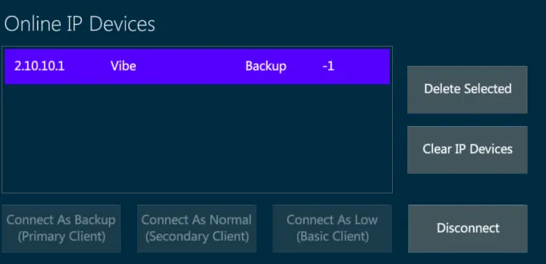
- Wait for the Disconnect Progress bar to finish.
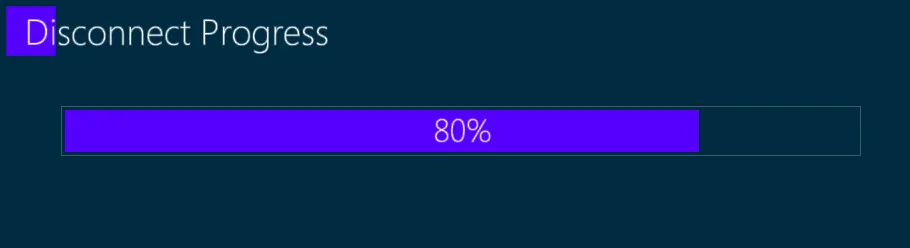
- The Partner Disconnected advice appears on both consoles.
The Partner Disconnected advice appears also in case of connection failure (for example if the cable is disconnected or if one console fails or loses power).
If the connection with the Master fails, the Backup will automatically take control of the outputs, ensuring that the show won’t lose any data.
The Command Line informs that the connection with the partner is lost.
If a lost connection is restored, a popup appear on both systems to inform the user that the other system is online again and ask which option to choose.
Stand Alone - the consoles will use the show independently from each other, leaving the session.
Offline - the console will keep the show but disables the outputs, without leaving the session.
Master - the console will be the Master, performing a full sync operation to make the other console the Backup.
Backup - the console will be the Backup, performing a full sync operation to make the other console the Master.
In a MultiUser Session there may be different type of Clients connected. The Client type affects the system’s rights of use and limits the operations that can be done from it. The Client type may be Backup (Primary Client), Normal (Secondary Client), Low (Basic Client). Not implemented yet..
11.5.2 Users
Not implemented yet..
Users popup allows to configure and assign user rights to the Vibe systems on the same network that are connected to the Master console’s session..
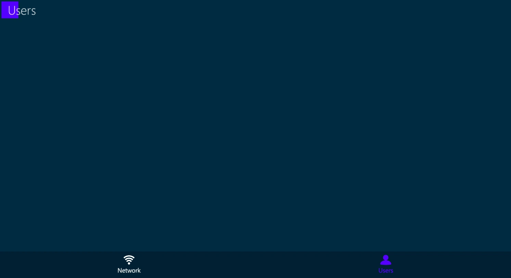
Each User Client has specific authorizations and limitations for managing the Master console’s show patch, program and playback properties..
The User right may be assigned with Default options or Customized..
11.6 MIDI
MIDI (Musical Instrument Digital Interface) is a protocol that was originally developed by the music industry to allow multiple MIDI sound devices to be triggered from just one source, usually a master keyboard or synthesizer.
MIDI is a control protocol and does not transmit audio.
Over the years the MIDI protocol has evolved to become a common way to synchronize sound, video and lighting equipment.
MIDI is based on a 7-bit architecture and therefore has a theoretical limit of 127 possible notes for a keyboard. (Most pianos use only 88 notes and synthesizers even less)
MIDI implementation:
16 independent MIDI channels - The channels systems listen to.
127 Note ONs - Pressing down on a keyboard.
127 Note OFFs - Lifting off a keyboard.
Note On Velocity of 1 ⟶ 127 - How hard the key is struck.
After Touch pressure of 0 ⟶ 127 - How much pressure is applied after the key reaches the bottom.
127 controllers each with a range of 0 ⟶ 127 - Encoder wheels or sliders.
Patch changes from 0 ⟶ 127 - Change from one instrument to another.
Pitch bend wheel that has a 14-bit resolution.
A section for MIDI time code and other manufacturer’s “System Exclusive” information.
11.6.1 MIDI Settings
To receive and generate Midi signals each protocol needs to be enabled.
Open the I/O Settings popup from the Vibe menu or with the {I/O Settings} button.
In MIDI Tab it is possible to enable and disable the Midi Notes, the Midi Time Code and the Midi Show Control devices.
Configure MIDI:
Connect all appropriate MIDI devices and power them on.
Toggle a MIDI Connection source:
Local MIDI is generated and received from the 5 pin DIN connectors on the back of the console.
MIDI over USB is transmitted and received over standard USB connectors. The device must be MIDI over USB class compliant to work with Windows without a driver. If the device has a Windows driver available it is recommended to install the driver for optimal results.
MIDI over Ethernet is supported by Windows class compliant MIDI over Ethernet and Compulite VC MIDI over Ethernet devices.
Refresh MIDI Connection looks for new connections if devices have been added later.
- Press Apply to stay in I/O settings, press [ENTER] or tap the Apply icon to close the popup.
11.6.2 MIDI Notes
In lighting MIDI notes and controllers from external sources are matched to the console’s controllers, buttons and wheels to synchronize the playback.
A GO Button on console A is configured to send Note #46, and a GO button on console B is configured to receive note #46. Pressing GO on console A console will press the GO on console B. In EDM shows DJ’s frequently control lighting via MIDI touchpad controllers.
To configure MIDI Notes open the I/O Settings popup from the Vibe menu or with the {I/O Settings} button.
In Midi Tab enable the Midi Notes In / Out and the Active Midi Channels on the columns.
In Notes/Commands Tab it is possible to assign specific commands to the Midi notes.
The numbers 0 ⟶ 127 on the MIDI grid represent 10 3/4 octaves of notes from C-0 ⟶ G-10.
Tabs at the bottom filter the type of MIDI message to be received.
Channel # may also be selected to filter just messages being received on the selected channel.
The MIDI grid is used to select any of the 127 values available for the MIDI message types selected with the tabs.
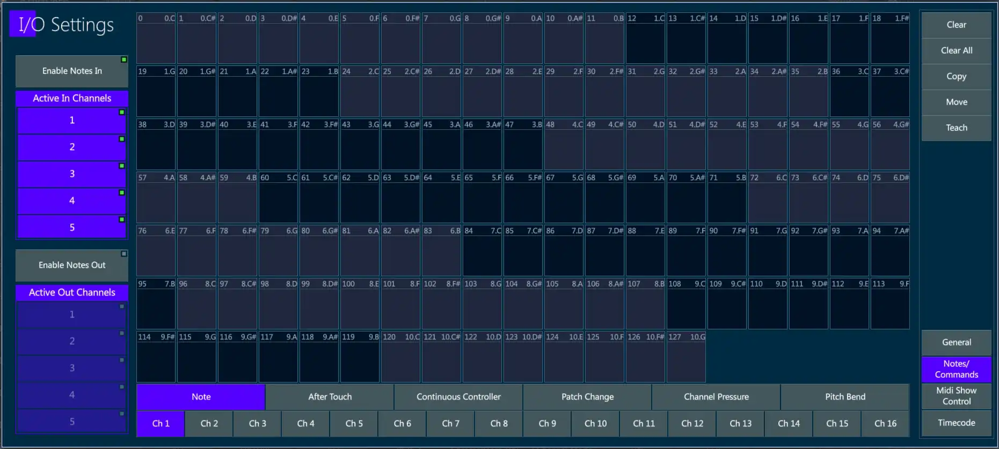
Assign MIDI Notes to Controllers:
In Midi Tab enable Notes In or Notes Out.
By default, all 16 available channels will be selected. Deselect as needed.
In Notes/Commands Tab select the tab for the type of MIDI message to be received.
Possible messages types are:
Note (Note ON = press down on controller key, Note OFF = release of controller key).
After Touch
Continuous Controller
Path Change
Channel Pressure
Pitch Bend
Tap {Teach } - The Teach key will turn purple.
Tap the desired note box in the MIDI grid - The box will turn purple.
Press any one of the controller keys - The location and button function of the controller will appear in the box.
Tap the {Teach} key again to toggle it off.
Tap Apply or press [ENTER] to close the popup.
Assign MIDI Continuous Controller to Vibe Controller:
Select the channel that the MIDI message will be received on.
Select the tab for the type of MIDI message to be received. In this case Continuous Controller.
Tap {Teach } - The Teach key will turn purple.
Tap in the desired continuous controller # in the MIDI grid - The box will turn purple.
Move any of the Vibe slider faders - The location and controller type will appear in the box.
Tap the {Teach} key again to toggle it off.
Tap Apply or press [ENTER] to close the popup.
Assign Macros to a MIDI note:
Select the channel that the MIDI message will be received on.
Select the tab for the type of MIDI message to be received.
Tap {Teach } - The Teach key will turn purple.
Tap the desired note box in the MIDI grid - The box will turn purple.
Press [MACRO] - The Macro selector popup will appear.
Select or type a previously recorded {Macro #} - the Macro # will appear in the the box.
Tap the {Teach} key again to toggle it off.
Tap Apply or press [ENTER] to close the popup.
Additional functions:
Tap {Clear} followed by a MIDI grid box to clear its assignment.
Tap {Clear All} to clear all MIDI assignments.
Tap {Copy} followed by the source MIDI assignment and then the destination MIDI assignment to copy from one note to another.
Tap {Move} followed by the source MIDI assignment and then the destination MIDI assignment to move the assignment from one note to another.
11.6.3 MSC
MIDI Show Control is a significant Real Time System Exclusive extension of the international Musical Instrument Digital Interface (MIDI) standard.
MSC enables all types of entertainment equipment to easily communicate with each other through the process of show control.
The MIDI Show Control protocol is an industry standard ratified by the MIDI Manufacturers Association in 1991 which allows all types of entertainment control devices to talk with each other and with computers to perform show control functions in live and canned entertainment applications.
Just like musical MIDI, MSC does not transmit the actual show media, it simply transmits digital information about a multimedia performance. * Courtesy Wikipedia
Midi Show Control was developed as a simple standard method of triggering basic commands on dissimilar devices.
Basic MSC commands are:
Go
Stop
Fire (Generally used for macros)
Also supported on receive are:
All fixtures
General lights
Moving lights
Receive MSC:
Tap {MTC In} in the I/O Settings popup, Midi Tab.
Match the {Device #} to number of the peer that will be sending the control commands.
If the Peer # is above 111, select a Group # that matches and all devices set to that Group # will receive MSC packets.
If the Peer # is 127 (Broadcast Mode) packets will be received on all devices regardless of their Device or Group numbers.
Transmit MSC:
Not implemented yet.
Recommended reading: http://jac.michaeldrolet.net/SCS_10_Help/scs_options_mid_msc.htm
11.7 TimeCode
Time Code is used to synchronize Vibe events with the internal timeline or external SMPTE Linear Time Code (LTC) or MIDI Time Code (MTC).
11.7.1 Connections
Vibe has Time Code connectors for the following:
Audio Combi Jack connector for SMPTE input with:
Female unbalanced line level input on 1/4” phone jack
Female 3 pin XLR balanced line level input.
Female 5 Pin DIN connector for MIDI input.
Female 5 Pin DIN connector for MIDI output.
USB 2 and USB 3 ports for USB class compliant MIDI over USB devices.
RJ45 ports for MIDI over Ethernet (Compulite devices)
11.7.2 LTC
To trigger a timeline with an LTC or Linear Time Code source, the SMPTE input protocol needs to be enabled.
Open the I/O Settings popup from the Vibe menu or with the {I/O Settings} button.
The SMPTE Tab contains the toggle button to enable or disable the LTC input.
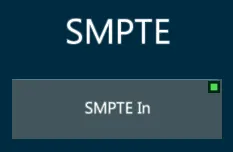
Currently Vibe is only capable of receiving LTC inputs, but will be able to send SMPTE output in future releases.
Recommended quality and level for SMPTE:
SMPTE is very sensitive to distortion and also requires adequate gain. A clean audio signal with a gain ranging between 0db to +5db is recommended.
As the console SMPTE input is high impedance, if long runs are to be used it is recommended to send a 150 - 600 ohm balancing line level feed to a transformer close to the console and convert to high impedance.
11.7.3 MTC
To trigger a timeline with an MTC or Midi Time Code source, the MTC input protocol needs to be enabled.
Open the I/O Settings popup from the Vibe menu or with the {I/O Settings} button.
The MIDI Tab contains the toggle button to enable or disable the MTC input.
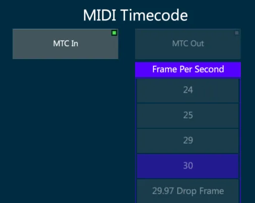
Currently Vibe is only capable of receiving MTC inputs, but will be able to send MTC output in future releases.
MIDI Time Code is similar to the SMPTE Time Code and is used to synchronize audio, video, and lighting equipment, but unlike the SMPTE it does not use an audio signal.
MTC is available in the following frame rates:
24 frame/s (standard rate for film work)
25 frame/s (standard rate for PAL video)
29.97 frame/s (drop-frame timecode for NTSC video)
30 frame/s (non-drop timecode for NTSC video)
11.8 OSC
OSC (Open Sound Control) is a protocol for networking with sound synthesizers, computers, and other multimedia devices for purposes such as musical performance or show control.
OSC enables a text string based exchange of commands and triggers between different devices via a network connection, that is used to establish the synchronization between different systems.
Connections with OSC can use TCP or UDP protocol for direct communication over the network.
OSC Input
Vibe supports the OSC input protocol using TCP, UDP, or both.
In the I/O Settings popup, on the OSC tab, there is the list of supported OSC strings as well as OSC ports and protocols.
OSC Connections may be configured in I/O Settings, OSC section, Connections tab.
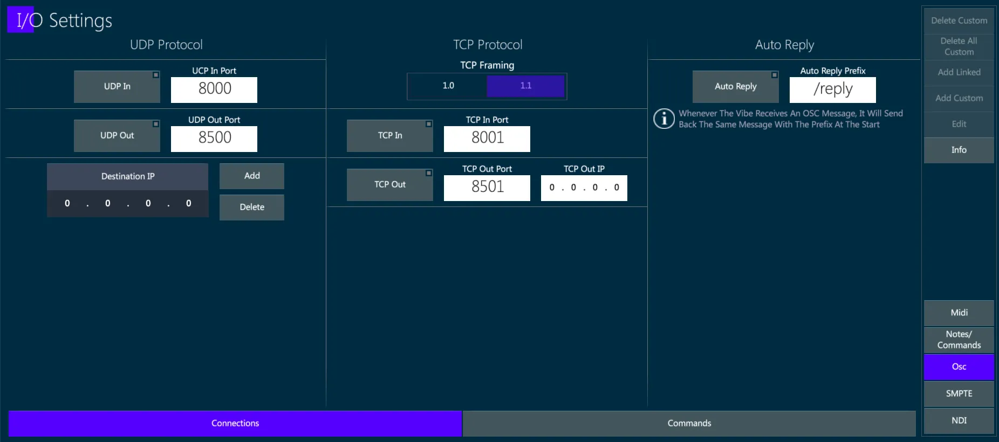
Enable or Disable and configure the UPD In/Out Ports and Destination IP addresses.
Enable or Disable and configure the TCP In/Out Ports and TCP Out IP address.
Enable or Disable the Auto Reply message that the Vibe will send back whenever it receives an OSC message, as a receive confirmation.
OSC Commands may be visualized in I/O Settings, OSC section, Commands tab.
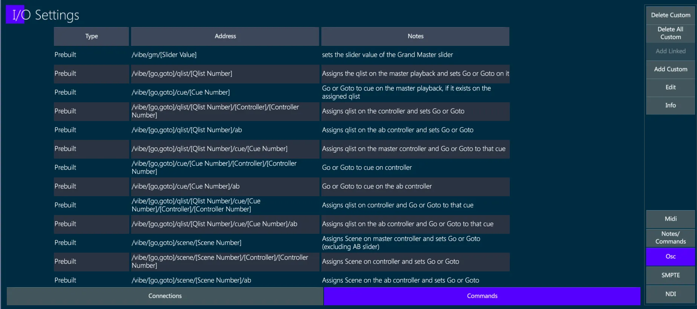
Prebuilt commands are already available and listed and they cannot be deleted.
{Delete Custom} removes the selected custom command.
{Delete All Custom} removes all the custom commands.
{Add Linked} opens a command where the OSC string of a command linked to the selected command can be created, with a Notes box where a short explanation of the command may be written.
{Add Custom} opens a popup where the OSC strings can be created, with a Notes box where a short explanation of the command may be written.
{Info} key opens a popup explaining how the prebuilt OSC Commands work.
OSC Output
Vibe supports the OSC output protocol using TCP, UDP, or both.
The OSC view shows the existing commands, allowing the user to create and edit custom commands and to send immediate commands and use keyboard arrows to re-send commands from the cache.
OSC commands can be attached to Cues with the syntax:
[QLIST], [#], [CUE], [#], [ATTACH_OSC] (toolbar).
The Attach OSC to Cue popup will open.
In the Attach OSC to Cue popup the OSC Commands can be attached and detached to any stored Cue.
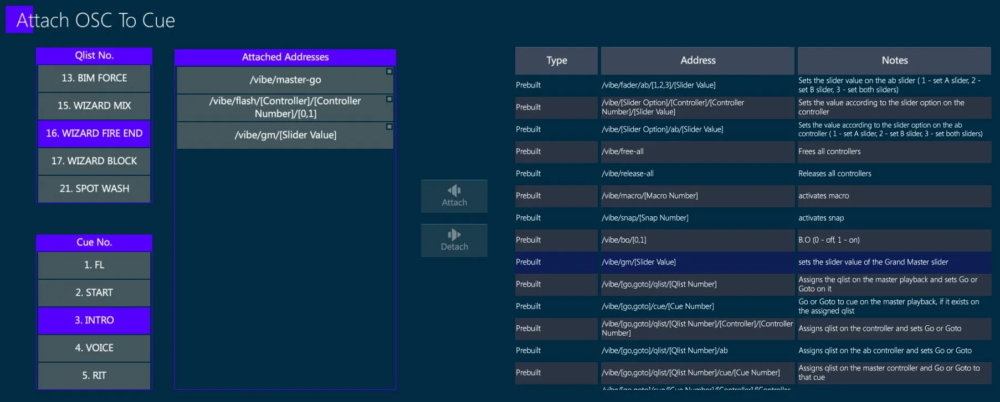
To Attach OSC Commands to a Cue:
Select the Qlist and Cue from the boxes on the left side.
Select the OSC Command from the list on the right side.
Tap {Attach} key.
The OSC Command will be added to the Attached Addresses list.
To Detach OSC Commands to a Cue:
Select the Qlist and Cue from the boxes on the left side.
Select the OSC Command from the Attached Addresses list.
Tap {Detach} key.
The OSC Command will be removed from the Attached Addresses list.
11.9 CITP
The CITP (Controller Interface Transport Protocol) is a network protocol used between lighting control consoles, visualizers and media servers.
The protocol allows to transport information, browse media and thumbnails, stream media among different devices.
CITP Settings popup gathers all the CITP capabilities of the Vibe together.
To open the CITP Popup:
Tap Vibe menu button
In Settings, tap CITP Settings
or
- Tap [CITP Settings] button.
In the popup there are 4 tabs:
General
Media Servers
Visualizers
Consoles
11.9.1 General
This tab shows the general information about the console and gives the option to enable/disable CITP communication from/to the console.
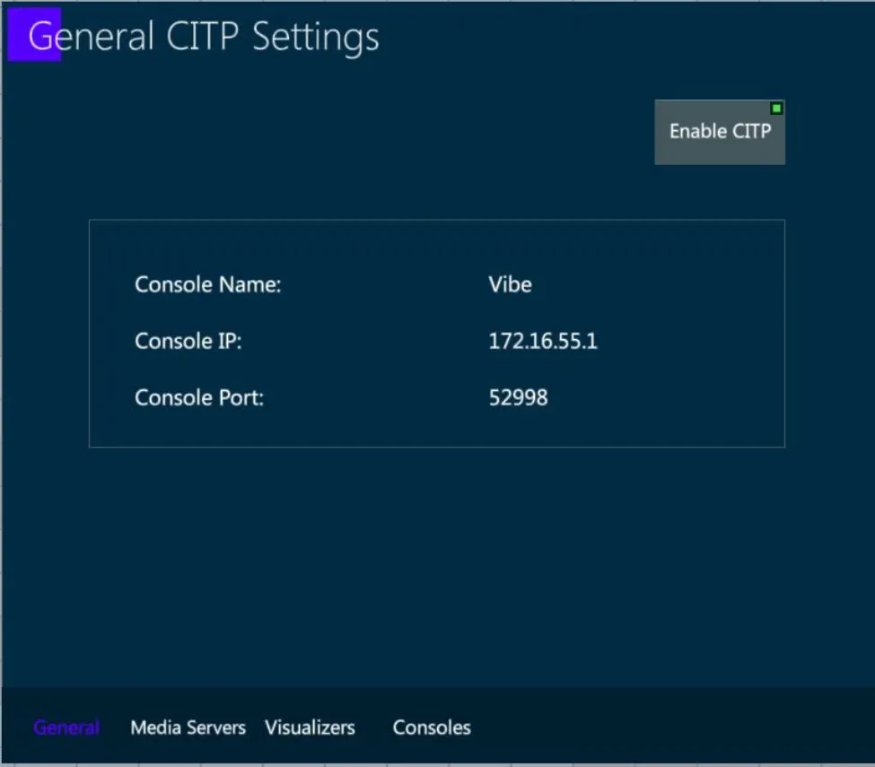
11.9.2 Media Servers
This tab shows a list of the detected Media Servers on the network.

In order to connect to a media server and start a session, select a media server from the list and press Connect.
In order to link a media server to a specific fixture, select a connected media server from the list and tap Configure. A popup will appear where you can choose which fixtures you want to link.
In order to get all the available data from a media server, select a connected and linked media server from the list, and tap Get Data. All available data such as thumbnails, effects etc. will be synced from the media server to the fixtures on your show.
11.9.3 Visualizers
This tab shows a list of the detected Visualizers on the network that are using CITP.
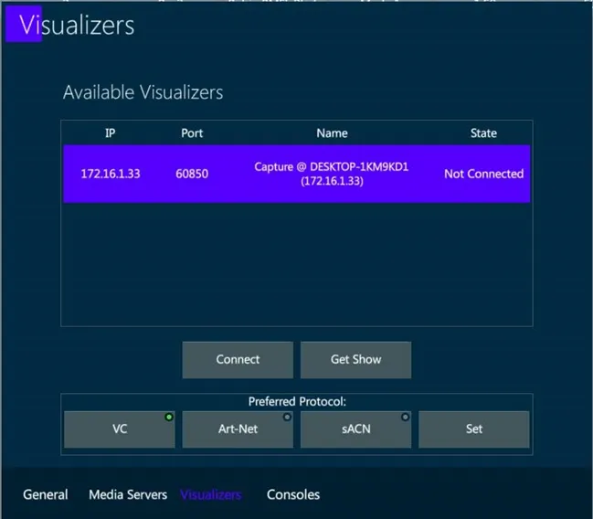
To connect to a visualizer and start a session, select it from the list and tap Connect.
Once connected, to get the patch from the visualizer, select it from the list and tap Get Show.

👉 This action will clear the current show data, get the devices, fixtures, numbers, patch, XYZ information from the visualizer and automatically create them on your show.
11.10 PSN
The PSN (PosiStageNet) protocol is supported.
PSN (PosiStageNet) is a network protocol used between lighting control consoles and stage tracking systems to get the position data of a target or a moving structure, in order to automatize operations related to dynamic fixture focusing and positioning on the stage.
👉 PSN data may be used to automatically follow a person or an object moving through the stage, by updating the fixtures’ Pan and Tilt values based on the XYZ coordinates received by the protocol streaming.
👉 PSN data may be used to automatically update the calibration data of fixtures hanged on a moving truss or any object where the tracker is also mounted.
When a PSN signal is received from the network, the Trackers View in the Protocols tab shows the incoming PSN channels.
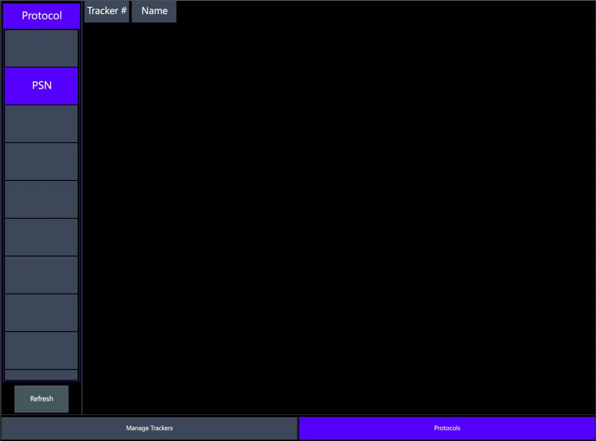
Trackers can be patched to the PSN channels.
Fixtures’ calibration data can be linked to the trackers in order to automatically update their positioning information based on the data received from the PSN.
👉 For a correct use of this feature, the fixture offset from the tracker must be set in the calibration coordinates table and has to be accurate.
- Fixtures’ Pan and Tilt parameters can be stored linked to trackers in order to automatically update their focusing values based on the data received from the PSN.
👉 For a correct use of this feature, the fixture calibration coordinates must be set and have to be accurate.
Please refer to the Tracker View for configuring and programming the Vibe Trackers.
11.11 NDI
The NDI (Network Device Interface) protocol is supported.
NDI (Network Device Interface) is a network protocol used to stream media contents, such as images and videos, between different devices.
Enable NDI streaming in the I/O Settings popup.

Choose the behavior of the affected parameter values in case the input stream goes off:
{Keep Last} to keep the last frame
{Blackout} to fade to black
👉 NDI may be used to receive a video stream from a device in the network and connect it to a Pixel Mapper, to automatically control the fixtures’ color mix parameters according to the video input.
Please refer to the Pixel Mapper View for placing fixtures on a pixel mapper and connect it to the NDI source.